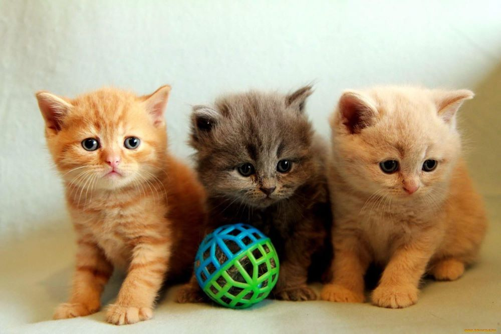

Welcome to My Webpage About Cats
Kitty Facts

Rankings and Fun Facts!
Cats
Dogs
You don't have to walk cats
Cats clean themselves
Did you know milk is actually bad for cats?
Did you know female orange cats are rare?